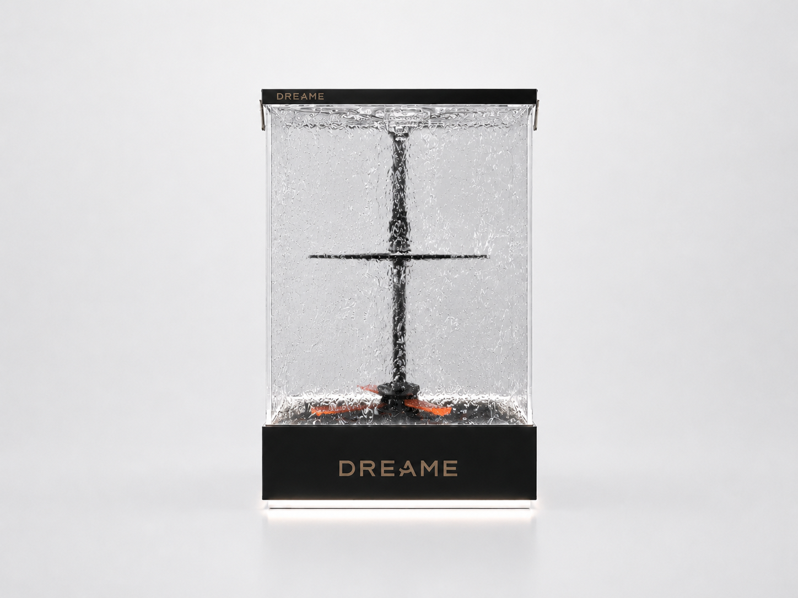
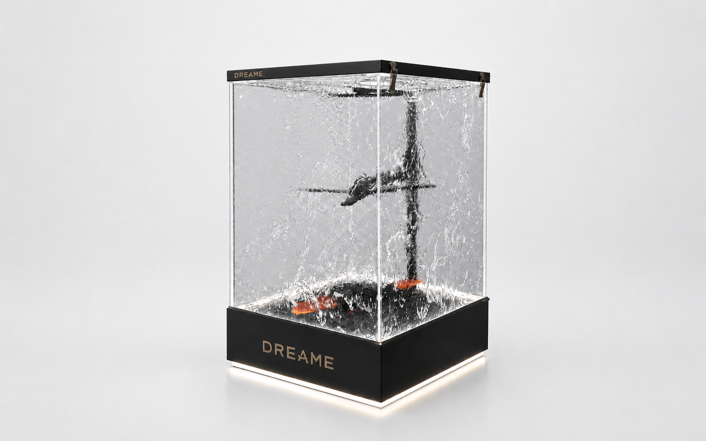
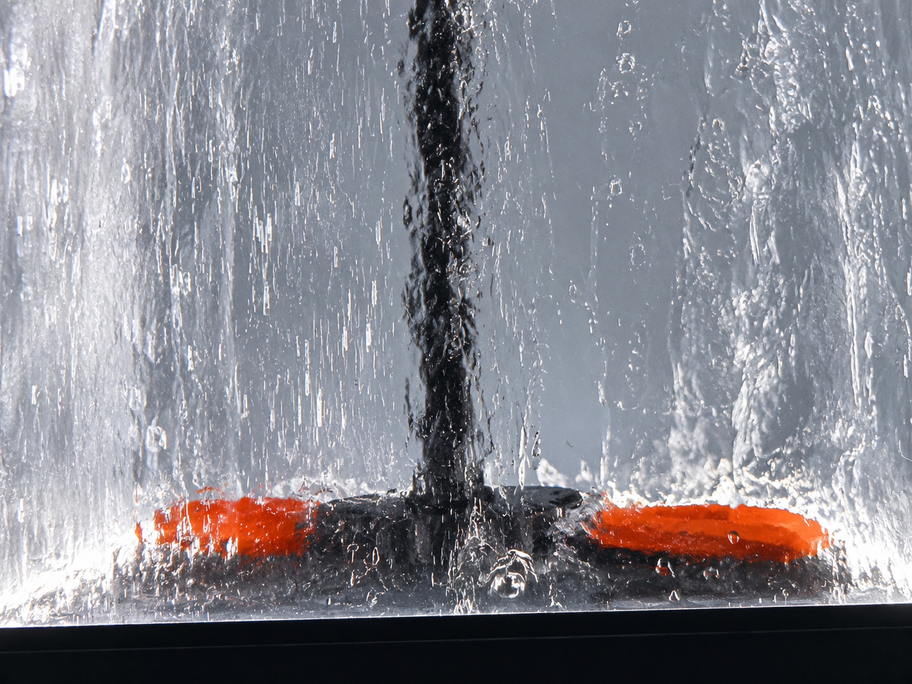
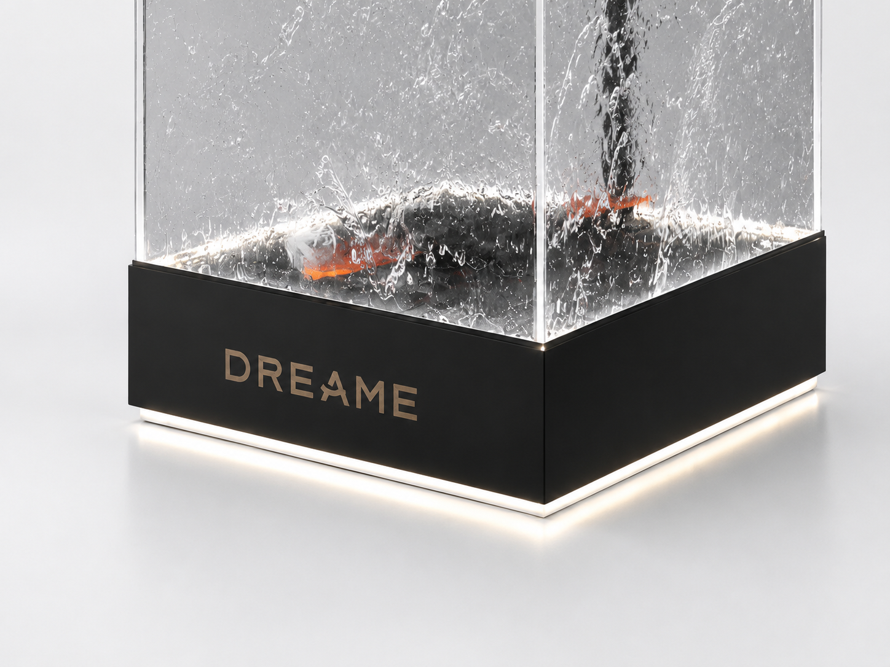

DREAME Water Flow Demonstration Display
A demonstration prop becomes more convincing when product action, water behavior and brand presence are resolved inside one controlled volume.
The DREAME Water Flow Demonstration Display is a custom transparent display prop designed and manufactured by REYI. A clear acrylic tank, live water circulation and illuminated black base turn a technical function into a visible retail story. The result is a compact branded object that helps customers quickly understand motion, flow and construction while keeping the display visually clean and rollout-friendly.
The front elevation keeps the mechanism readable while preserving a calm branded silhouette
The front view shows the full display proportion: a clear vertical tank, a centrally aligned internal mechanism, a compact top frame and a weighted illuminated base with DREAME branding. The water curtain softens the technical parts just enough to make the demonstration dramatic, while the rectilinear outline keeps the object architectural and easy to place in a showroom, product zone or trade-fair setting.

Four coordinated decisions turn a technical mechanism into a clean display object
Transparent Volume
The clear tank exposes the product story directly, allowing water movement and internal action to remain visible from multiple viewing angles.
Controlled Water Motion
The circulation system generates a repeatable flow pattern that makes performance visible without relying on printed explanation alone.
Branded Base & Light
The black base anchors the display visually, provides space for branding and hides technical components while the light line lifts the object from the floor or tabletop.
Rollout-Friendly Fabrication
The display can be adapted in size, finish, logo treatment and electrical specification for different stores, launches or regional programs.
The product idea becomes clear through three controlled details

The three-quarter studio view clarifies the full object: a clear tank, calm black framing and an illuminated base that turns a technical demo into a retail-ready branded volume.

The close-up of the internal water action makes the core message immediate: flow, turbulence and the moving element are all visible without cluttering the outer form.

The illuminated base, sharp acrylic corner and restrained branding show how the lower structure hides technical parts while keeping the display precise and premium.
Planning a custom demonstration display with live water action?
Share the product dimensions, intended water effect, store environment and rollout quantity with us. REYI can coordinate the acrylic structure, circulation system, illuminated base, brand graphics, power routing, packing and installation-ready fabrication. Programs can be ordered through a brand headquarters and delivered for use in markets worldwide.
- Product size
- Water effect brief
- Power requirements
- Brand graphics
- Quantity & market
- Delivery timeline